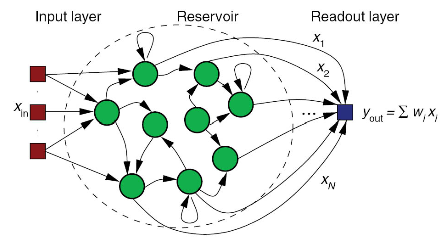
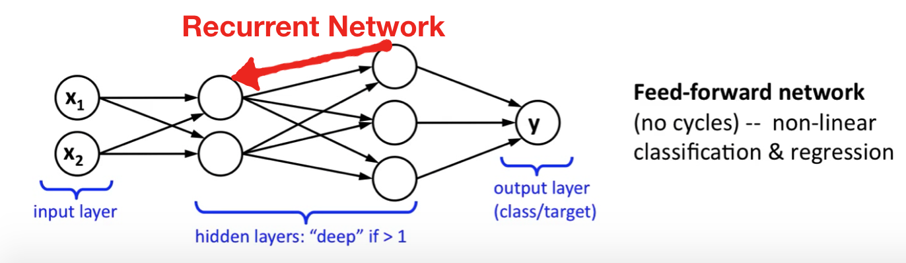
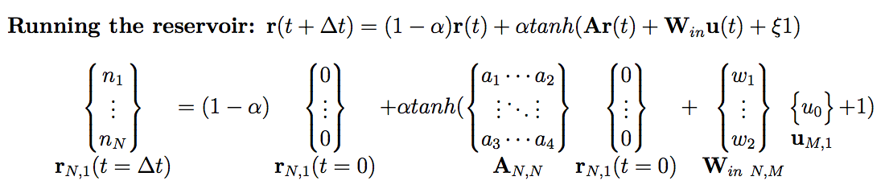
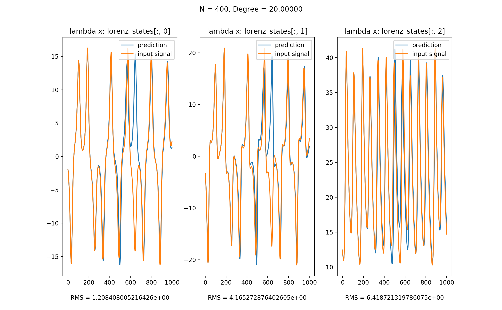
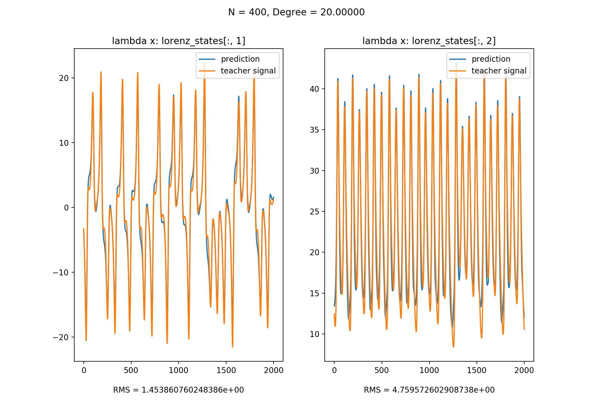
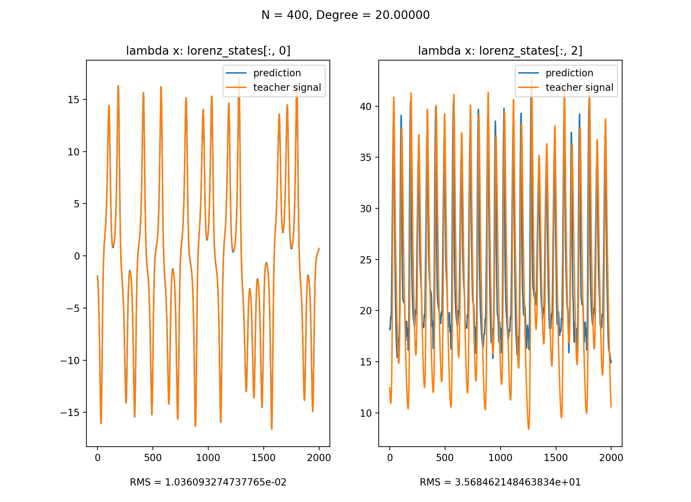
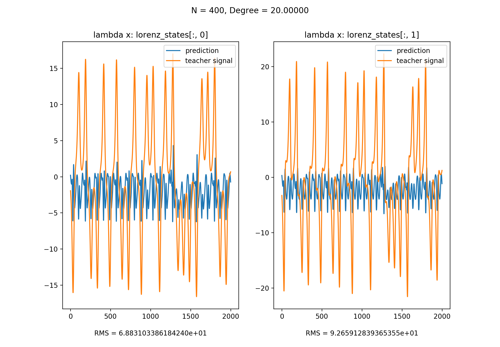

Feb 25, 2018
Reservoir Computing， 也叫Echo state network， 被视为是神经网络(Neural Network)的一种拓展框架。一个reservoir computer由以下三个部分组成：

前馈神经网络与递归神经网络的差别在于前者只允许信号从输入层向前传到输出层，信号的传递是单向的，它也不存在任何的回路，也就是说任何一层的输出都无法影响这层本身的数据，一般用于模式识别；后者通过引入循环的方法允许信号双向传递。

目前已知reservoir有以下三个关键特性：
Reservoir computing的一个神奇之处在于，中间层的reservoir矩阵是随机生成的且生成后就保持不变，真正需要训练的只有输出层，这也使它比传统的方法快很多。
下面提出一种reservoir computing的示例，该reservoir的输入层有M个节点，中间层有N个节点，输出层有P个节点，reservoir dynamics被定义为：
\[\textbf{r}(t + \Delta t) = (1 - \alpha)\textbf{r}(t) + \alpha tanh(\textbf{Ar}(t) + \textbf{W}_{in}\textbf{u}(t) + \xi 1)\]
其中各变量意义如下：

前期主要分为两个阶段，初始阶段(Initial period)和训练阶段(Training period)。在初始阶段，一般认为所有信号都是已知的，此时无需记录reservoir中节点的状态。当初始阶段结束训练阶段开始时，需要将每一次计算得到的reservoir状态记录到一个矩阵中。
for t in range(trainLen):
u = input_signal[t]
r = (1 − alpha) ∗ r + alpha ∗ np.tanh(np.dot(A, r) + np.dot(Win, u) + bias)
if t >= initLen:
R[:, [t − initLen]] = np.vstack((u, r))[:, 0]收集到这些状态以后，就可以训练输出层了，这里使用ridge regression来训练。
\[W^*_{out} = \textbf{SR}^T (\textbf{RR}^T + \beta \textbf{I})^{-1}\]
训练得到\(W_{out}\)之后，就可以使用公式\(\hat{\textbf{s}} = \textbf{W}_{out}\textbf{r}(t)\)来测试reservoir了。
S = np.zeros((P, testLen))
u = input_signal[trainLen]
for t in range(testLen):
r = (1 − alpha) ∗ r + alpha ∗ np.tanh(np.dot(A, r) + np.dot(Win, u) + bias)
s = np.dot(Wout, np.vstack((u, r)))
S[:, t] = s
u=s只需比较reservoir生成的结果与真实的数据即可，一般用RMS(root mean square) error来衡量。
该reservoir有两种用法，模拟信号与预测信号。
这里使用以下JSON来配置这个reservoir，从而模拟Lorenz System:
{
"input": {
"nodes": 3,
"functions": [
"lambda x: lorenz_states[:, 0]",
"lambda x: lorenz_states[:, 1]",
"lambda x: lorenz_states[:, 2]"
],
"length": 10000
},
"reservoir": {
"start_node": 400,
"end_node": 400,
"step": 1,
"degree_function": "lambda x: np.sqrt(x)",
"sigma": 0.5,
"bias": 1,
"leakage_rate": 1,
"regression_parameter": 1e-07
},
"output": {
"nodes": 1
},
"training": {
"init": 500,
"train": 4000,
"test": 1000,
"error": 500
}
}我们将Lorenz System的三个信号作为input signal，并在训练完成之后移除该signal，而将该reservoir产生的值作为input signal再输入reservoir。从图中可以看到，该reservoir良好地模拟了Lorenz System。

这里使用以下JSON来配置这个reservoir，从而预测Lorenz System:
{
"input": {
"nodes": 1,
"functions": [
"lambda x: lorenz_states[:, 2]"
],
"length": 10000
},
"reservoir": {
"start_node": 400,
"end_node": 400,
"step": 1,
"degree_function": "lambda x: np.sqrt(x)",
"sigma": 0.5,
"bias": 1,
"leakage_rate": 0.5,
"regression_parameter": 1e-8
},
"output": {
"nodes": 2,
"functions": [
"lambda x: lorenz_states[:, 0]",
"lambda x: lorenz_states[:, 1]"
]
},
"training": {
"init": 500,
"train": 4000,
"test": 2000,
"error": 500
}
}以x作为input signal, y & z作为teacher signal来训练，训练后便可以使用x来预测y & z

以y作为input signal, x & z作为teacher signal来训练，训练后便可以使用y来预测x & z

以z作为input signal, x & y作为teacher signal来训练，训练后无法使用y来预测x & z。原因在于在只知道z的情况下，我们无法得知x与y的符号，从而造成了non-observability。

注: 本文代码可以在此处下载
(The End)
[Return to the homepage]